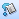
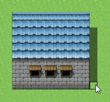

If you want to edit a map's design, click the Map button on the toolbar (or select Map on the Mode menu) to switch to editing mode.
Select the map data you want to edit by clicking on the map list on the lower left part of the window. The current look of the map is displayed in the map view on the right side of the window.
Select the tiles you want to use by clicking them on the tile palette. The currently selected tile will have a white border around it. Switch between the types of tiles displayed on the tile palette by clicking tabs A through E.
You can specify multiple tiles to draw on your map by drag-selecting on the tile palette.
Select the tool you want to use to draw tiles by clicking it on the tool bar. There are four tools in all. Once you have selected a tool, click or drag on the map displayed on the right side of the window (map view) to draw the selected tile(s). You can also select drawing tools on the Draw menu.
You can delete the tiles you have drawn by drawing transparent tiles over them. Upper-layer tiles on the B tab to the upper left are transparent.
Draws the selected tile(s) where you click.
Draws the selected tile(s) within the entire area bounded by the rectangle you dragged.
Draws the selected tile(s) within the entire area bounded by the oval you dragged.

FillDraws the same kind of tile in a contiguous area, starting from the position you first clicked.
Right-clicking on map view sets the tile at the clicked position as the tile to draw. Right-clicking a position where both upper and lower-level tiles have been drawn sets both of them as the tiles to draw in an overlapping state.
Some tiles on the tile palette's A tab include a feature known as auto tile. The auto tile feature has multiple patterns for each type of tile. Boundaries will be automatically adjusted according to how tiles are arranged. Tile types A1 through A4 in the tileset database have the auto tile feature.
Note that you can temporarily disable the auto tile feature by holding down the Shift key while drawing tiles or using the eyedropper.
Arranging two or more auto tiles vertically will automatically draw a shadow on the bottom right side of some tiles. However, there are other tiles where no shadow will be drawn.

The shadow pen is a tool for drawing wall and building shadows. It allows you to shade one-quarter of a tile.
To edit a map with the shadow pen, click the Shadow Pen button on the toolbar (or select Shadow Pen on the Draw menu), and then click on the map view. Clicking where there is no shadow will draw one, and clicking where there already is a shadow will erase it.
The A2 tiles in the tileset under the tile palette's A tab (rows three through six) are divided into base tiles (columns one through four from the left) and embellishment tiles (columns five through eight from the left). Embellishment tiles can be placed on top of base tiles.
However, with tilesets where Mode in the tileset dialog box is set to Field type, placing embellishment tiles over base tiles selected from columns two or four transforms them into column-one or three base tiles.